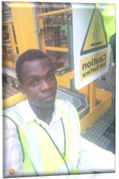

|  | Okesanjo OluwafemiOperators Manager, Gas Gen Plant A disciplined and motivated individual, trained in electrical engineering, electrical maintenance and supervisory role to provide quality service by applying numerous acquired skills and educational knowledge in organizations and the society at large to help achieve excellence. |
| Date | Achievements |
|---|---|
| (2022-2023) | National Youth Service Corps NYSC |
| (2020) | Higher National Diploma (HND) in electrical engineering. The polytechnic, Ibadan. |
| (2016) | Ordinary National Diploma (OND) in electrical engineering. Moshood Abiola Polytechnic Ojere, Abeokuta |
| (2011-2013) | Community High School Oke-Agbede Ogun state. |
| (2009-2010) | Government Technical School New Bussa, Niger state. |
| (2000-2005) | Methodist Primary School Owo, Ondo state |
Versatile in electrical installation
Electrical maintenance / Intermediate knowledge in electronics engineering
Electrical/Electronics Diagram
Supervision and job evaluation
Youths/Choir coordinating
Program Organizing and Facilitator/Conductor
Business
Computer literacy (Excel, PowerPoint etc) and Graphics
Basic C++ programming
| Date of birth: | 14th July 1996 |
| Gender: | Male |
| Marital status: | Single |
| Religion: | Christianity |
| Nationality: | Nigerian |
| State of origin: | Ogun state |
| Local Government: | Yewa North |
| Dates | Job Description |
|---|---|
| 2011-till date | Electrician |
| (April-May 2023) | Asst. Technician at Dangote Fertilizer (DFL) |
| (2016-2017) | Tommy TOAK Engineering Abeokuta |
| (2009) | Generating station kanji Niger state |
| (2014-2018) | Electrical Attendance at Okiki-Oluwa Bakery |
| (2022-2023) | Acting Editor-in-Chief at Community High School Otamokun. |
| (2023) | Electrical engineer at Riggs Ventures West Africa Plc |